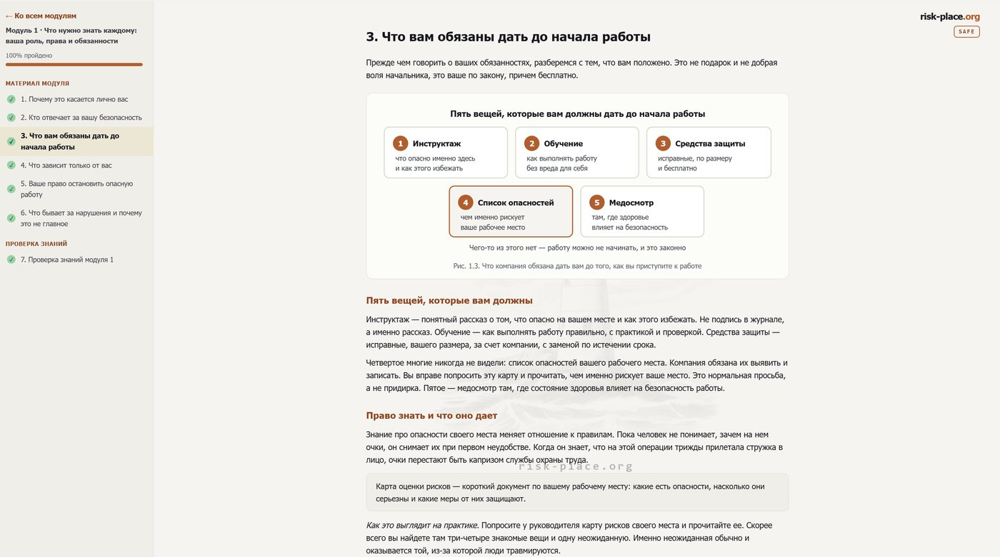
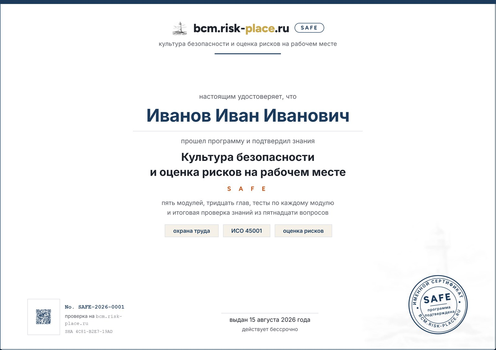

Программа для всего персонала: человек учится видеть опасности вокруг себя и управлять ими. Не про бумаги и проверки, а про то, что делать в свою смену.
от 5 000 ₽за человека в группе от 50 · одному участнику 9 900 ₽
Компаниям — оплата по счету от организации. Доступ к материалам открыт полгода с даты выдачи.
Язык программы рассчитан на массовую аудиторию: короткие предложения, живые примеры, пары «как бывает» и «как правильно».
Каждая глава — примерно на четыре минуты чтения, с одной или двумя схемами и разбором рабочей ситуации.
С чего начинается личная безопасность на рабочем месте. Кто за что отвечает, что работодатель обязан дать до начала работы, что зависит только от вас и как устроено право остановить опасную работу.
Разница между опасностью и риском на понятных примерах. Оценка риска за минуту, высота и электрический ток, механизмы и транспорт, медленно действующие вредности, осмотр рабочего места за пять минут и иерархия защиты.
Почему мелочи важнее разборов постфактум. Пирамида происшествий, как сообщить об опасности, чтобы услышали, стоп-карта, разбор случая без поиска виновных и что делать, если опасность не устраняют.
Порядок, который спасает двоих. Первая минута, чего делать нельзя, границы первой помощи, что происходит после несчастного случая, пожар и авария без пострадавших, ваши права при расследовании.
Где чаще всего происходит непоправимое, три тяжелых сценария и барьеры к ним, работы повышенной опасности и наряд-допуск, подрядчики и работы рядом, личный чек-лист на смену. Модуль выпускается в отраслевых редакциях.
Четыре ступени. Пройти программу, не отвечая на вопросы, нельзя.
Программа работает без установки, паролей и обслуживания с вашей стороны. Вы присылаете список участников, мы выдаем доступы.
Настоящие экраны, снятые в программе. Слева видно оглавление модуля и отметки о пройденном, справа — глава с разбором и схемой.

Нажмите на снимок, чтобы увеличить.

Образец. В настоящем сертификате стоят имя участника, номер и дата.
Сертификат уходит участнику на почту по итогам всей программы: после тестов по каждому модулю и итоговой проверки знаний из пятнадцати вопросов.
Сертификат называется так же, как программа, и говорит о подготовке человека, а не о государственной аккредитации. Он не заменяет документы, которые компания оформляет по требованиям охраны труда, и не выдается вместо них.
Он подтверждает то, ради чего программа и делалась: сотрудник умеет замечать опасности вокруг себя, оценивать их и действовать при происшествии. Подлинность каждого номера можно проверить.
Работодателю сертификаты группы приходят одним списком, вместе с отчетом о прохождении.
Публичный реестр запускается с первой группой участников. Чтобы проверить сертификат сегодня, напишите на info@risk-place.ru — отвечаем в тот же день.
Вариант для тех, кому программа нужна лично, а не на бригаду: специалиста по охране труда, мастера участка, руководителя небольшой площадки, самозанятого подрядчика. Содержание то же самое, что в корпоративном варианте, — пять модулей, тридцать глав, тесты и итоговая проверка знаний.
Нужно на группу — считайте по тарифам для компаний, там цена за человека ниже.
Онлайн-оплата картой подключается, пока доступ выдается по заявке в течение рабочего дня.
Цена за одного участника зависит от размера группы: чем больше людей, тем ниже цена за человека. Доступ к материалам открыт полгода с даты выдачи.
Небольшая площадка или отдельная бригада. Доступы выдаем в тот же день.
Цех, склад, филиал. Отчет о прохождении по всей группе.
Минимальная цена в линейке. Отраслевая редакция пятого модуля под вашу отрасль.
В стоимость входят все пять модулей, тесты, итоговая проверка знаний, именной сертификат и личный кабинет с прогрессом группы. Пять тысяч рублей за человека — минимальная цена в линейке, ниже мы не опускаемся. Группы от трехсот участников и несколько площадок обсуждаем отдельно: формат выдачи доступов и отчетность настраиваем под вас.
Одна форма на все: демонстрация программы, расчет и счет для компании, доступ для одного участника. Отвечаем в тот же рабочий день.
За 20 минут по видеосвязи покажем программу глазами участника и глазами ответственного за охрану труда. На встрече вы увидите:
Или напишите на info@risk-place.ru — ответим в тот же день.
Около двух часов чистого чтения. Участник проходит ее в своем темпе, с телефона или компьютера, и может вернуться к любой главе.
Нет. Каждый участник получает личную ссылку и открывает программу в браузере. Пароль не нужен, прогресс сохраняется автоматически.
В личном кабинете видно каждого участника: сколько глав пройдено, сданы ли тесты модулей, пройдена ли итоговая проверка. Когда участник заканчивает, приходит уведомление.
Именной сертификат «Культура безопасности и оценка рисков на рабочем месте» с уникальным номером — он называется так же, как сама программа. Это документ о подготовке, а не государственная аккредитация; он не заменяет документы, которые компания оформляет по требованиям охраны труда. Он подтверждает одно, но важное: человек прошел программу и на проверке знаний показал, что умеет видеть опасности вокруг себя, оценивать их и действовать при происшествии. Ценность здесь не в бумаге, а в знаниях и навыках, которые за ней стоят.
Да. Пятый модуль выпускается в отраслевых редакциях — металлургия, нефтегаз, склад и логистика, офис. Остальные модули общие для всех.
Да. Индивидуальный доступ стоит 9 900 ₽, содержание то же самое. Это вариант для специалиста по охране труда, мастера или руководителя площадки, которому программа нужна лично. Подробности в разделе пройти программу одному.
По счету от организации. Напишите на info@risk-place.ru, пришлем счет и договор.

Пятнадцать лет во главе риск-функций крупных компаний. В «Норникеле» построил непрерывность бизнеса с нуля. Директор по рискам нефтехимического мегапроекта стоимостью 20 млрд долларов с более чем 200 индикаторами строительных рисков. Заместитель председателя технического комитета 010 «Менеджмент риска» Росстандарта. Подготовил более 300 специалистов.